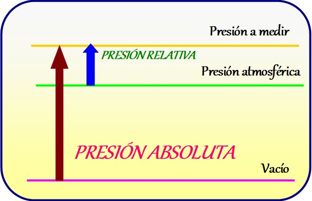

Presión de un fluido
La presión de un fluido es la fuerza ejercida por el fluido por unidad de área. Se debe a las colisiones de las moléculas del fluido entre sí y contra las paredes del contenedor. La presión se mide en unidades como pascales (Pa), atmósferas (atm) o milímetros de mercurio (mmHg).
Fórmula de la presión de un fluido:
La fórmula para calcular la presión de un fluido es:
P = F / A
- P: Presión del fluido
- F: Fuerza ejercida por el fluido
- A: Área sobre la cual se ejerce la fuerza
Principales características de la presión de un fluido:
- La presión de un fluido aumenta con la profundidad, ya que el peso del fluido sobre una determinada área aumenta con la profundidad.
- La presión de un fluido se transmite de manera uniforme en todas las direcciones.
- La presión atmosférica actúa sobre la superficie libre de un líquido y contribuye a la presión total.
Presión absoluta
La presión absoluta es la presión medida con respecto al cero absoluto en el vacío. Se utiliza como referencia el vacío perfecto, donde no hay moléculas presentes. La presión absoluta se mide en unidades como pascales (Pa) o bares (bar).
Fórmula de la presión absoluta:
La presión absoluta se calcula sumando la presión atmosférica a la presión manométrica:
P_absoluta = P_manométrica + P_atm
- P_absoluta: Presión absoluta
- P_manométrica: Presión medida con un manómetro
- P_atm: Presión atmosférica
Principales características de la presión absoluta:
- La presión absoluta es utilizada en aplicaciones científicas e ingenieriles donde se requiere conocer la presión en relación con el vacío absoluto.
- La presión absoluta puede ser negativa en situaciones donde la presión manométrica es menor que la presión atmosférica.
- La presión absoluta se utiliza en cálculos de densidad, temperatura y otras propiedades físicas de los gases.
Presión atmosférica
La presión atmosférica es la presión ejercida por la columna de aire en la superficie de la Tierra debido al peso de la atmósfera. La presión atmosférica varía con la altitud y las condiciones meteorológicas. Se mide en unidades como pascales (Pa), bares (bar) o milímetros de mercurio (mmHg).
Fórmula de la presión atmosférica:
La presión atmosférica se puede calcular mediante la fórmula:
P_atm = ρ * g * h
- P_atm: Presión atmosférica
- ρ: Densidad del aire
- g: Aceleración debido a la gravedad
- h: Altitud
Principales características de la presión atmosférica:
- La presión atmosférica disminuye a medida que aumenta la altitud.
- La presión atmosférica varía con las condiciones climáticas y puede influir en el clima, la formación de nubes y otros fenómenos atmosféricos.
- La presión atmosférica al nivel del mar se considera estándar y se utiliza como referencia en muchos cálculos y mediciones.
Principio de Arquímedes

El Principio de Arquímedes es un principio fundamental en la física que describe la fuerza de flotación experimentada por un objeto sumergido total o parcialmente en un fluido. Fue enunciado por el célebre matemático y científico griego Arquímedes.
Fórmula del Principio de Arquímedes:
El principio establece que la fuerza de flotación experimentada por un objeto sumergido en un fluido es igual al peso del fluido desplazado por dicho objeto. Matemáticamente, se puede expresar de la siguiente manera:
F_flot = ρ_fluido * V_objeto * g
- F_flot: Fuerza de flotación
- ρ_fluido: Densidad del fluido
- V_objeto: Volumen del objeto sumergido
- g: Aceleración debido a la gravedad
Principales características del Principio de Arquímedes:
- El principio se aplica a cualquier objeto sumergido total o parcialmente en un fluido, ya sea líquido o gas.
- La fuerza de flotación actúa en dirección opuesta a la fuerza de gravedad y es la responsable de que los objetos floten o se hundan en un fluido.
- El Principio de Arquímedes explica por qué los objetos parecen pesar menos cuando están sumergidos en un fluido en comparación con cuando están en el aire.
- El principio es fundamental en áreas como la navegación, la ingeniería naval y la hidrostática.
Principio de Pascal
El Principio de Pascal es un principio fundamental en la física que describe la transmisión de presión en un fluido incompresible. Fue enunciado por el matemático, físico e inventor francés Blaise Pascal.
Enunciado del Principio de Pascal:
El principio establece que cuando se aplica una presión en un punto de un fluido incompresible contenido en un recipiente, esa presión se transmite de manera uniforme en todas las direcciones y actúa con la misma intensidad en todas las partes del fluido y en las paredes del recipiente.
Principales aplicaciones del Principio de Pascal:
- Prensas hidráulicas: El principio de Pascal se utiliza en prensas hidráulicas para amplificar la fuerza aplicada. Al aplicar una pequeña fuerza en un pistón de área reducida, se genera una mayor fuerza en otro pistón de área más grande.
- Frenos hidráulicos: Los frenos hidráulicos utilizan el principio de Pascal para transmitir la presión ejercida en el pedal de freno a las ruedas del vehículo, multiplicando la fuerza y permitiendo detener el vehículo eficientemente.
- Gatos hidráulicos: Los gatos hidráulicos se basan en el principio de Pascal para levantar cargas pesadas. Al aplicar una pequeña fuerza en un pistón pequeño, se genera una fuerza mayor en otro pistón de mayor área, permitiendo levantar objetos pesados.
- Elevadores hidráulicos: Los elevadores hidráulicos utilizan el principio de Pascal para levantar y bajar cargas en edificios y otros lugares. La presión aplicada en un pistón se transmite a través del fluido y se utiliza para levantar la plataforma del elevador.
Ecuación de Bernoulli
La ecuación de Bernoulli es una importante ecuación en la física que describe el comportamiento de un fluido en movimiento. Fue desarrollada por el científico suizo Daniel Bernoulli en el siglo XVIII.
Enunciado de la Ecuación de Bernoulli:
La ecuación de Bernoulli establece que en un fluido en movimiento, la suma de la presión estática, la presión dinámica y la energía potencial por unidad de masa es constante a lo largo de una línea de corriente.
Componentes de la Ecuación de Bernoulli:
- Presión estática: Es la presión que ejerce un fluido en reposo. Depende de la profundidad y densidad del fluido.
- Presión dinámica: Es la presión asociada al movimiento del fluido. Está relacionada con la velocidad del fluido y su densidad.
- Energía potencial: Es la energía asociada a la posición del fluido en un campo gravitatorio. Depende de la altura del fluido.
Aplicaciones de la Ecuación de Bernoulli:
La ecuación de Bernoulli tiene diversas aplicaciones en la física y la ingeniería, algunas de las cuales incluyen:
- Aerodinámica: La ecuación de Bernoulli se utiliza para describir el flujo de aire alrededor de objetos, como aviones y automóviles.
- Hidrodinámica: Se aplica para estudiar el flujo de líquidos en tuberías, canales y otros sistemas hidráulicos.
- Ingeniería de fluidos: La ecuación de Bernoulli es fundamental en el diseño de sistemas de tuberías, bombas y turbinas.
- Medicina: Se utiliza en el estudio del flujo sanguíneo y la circulación en el cuerpo humano.
Teorema de Torricelli
El Teorema de Torricelli es una importante relación en la física que permite calcular la velocidad de salida de un fluido desde un orificio en un recipiente. Fue enunciado por el físico italiano Evangelista Torricelli en el siglo XVII.
Enunciado del Teorema de Torricelli:
El Teorema de Torricelli establece que la velocidad de salida de un fluido desde un orificio en un recipiente es igual a la velocidad que tendría un cuerpo al caer libremente desde una altura igual a la diferencia de niveles entre el orificio y la superficie libre del fluido.
Fórmula del Teorema de Torricelli:
La fórmula para calcular la velocidad de salida (V) utilizando el Teorema de Torricelli es:
V = √(2gh)
Donde:
- V es la velocidad de salida del fluido.
- g es la aceleración debido a la gravedad (aproximadamente 9.8 m/s²).
- h es la diferencia de altura entre el orificio y la superficie libre del fluido.
Aplicaciones del Teorema de Torricelli:
El Teorema de Torricelli tiene diversas aplicaciones en la física y la ingeniería, algunas de las cuales incluyen:
- Estudio del flujo de líquidos a través de orificios o tuberías.
- Diseño de sistemas de suministro y distribución de agua.
- Análisis de la velocidad de salida de fluidos en diferentes configuraciones.
- Aplicaciones en hidráulica, como en el funcionamiento de fuentes, chorros de agua y sistemas de riego.